Four clearly different directions for how Geo Pets World could look. Each board shows the same things — title logo, app icon, splash, world map, Hometown, Wildling collection, inventory and a confirmation popup — so they compare like for like.
Everything here is a concept for discussion. On the three fresh boards the map and Hometown are the game's real screens restyled, so the same place can be compared across looks.
The game as it looks now: in-game screenshots of 20 September, unchanged. This is what the four directions are measured against.
Open the reference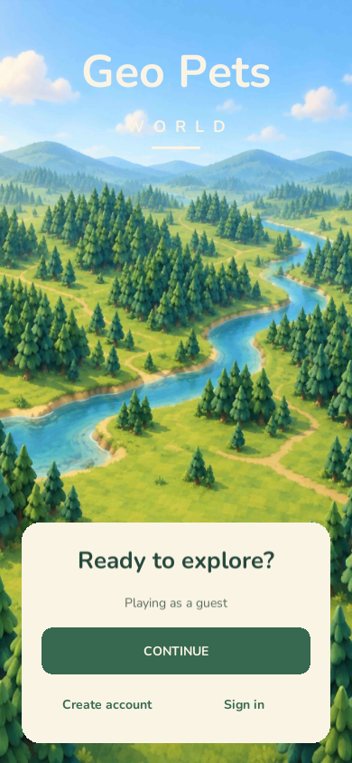
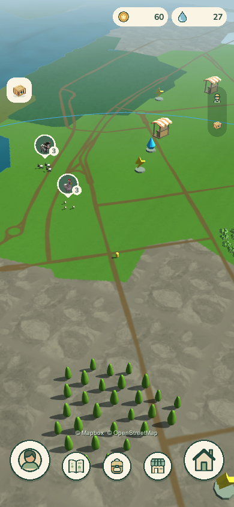
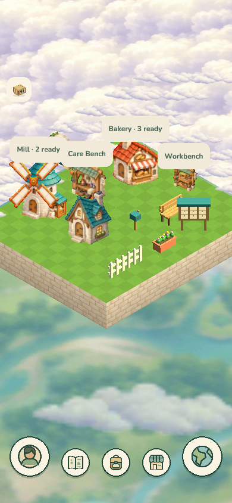
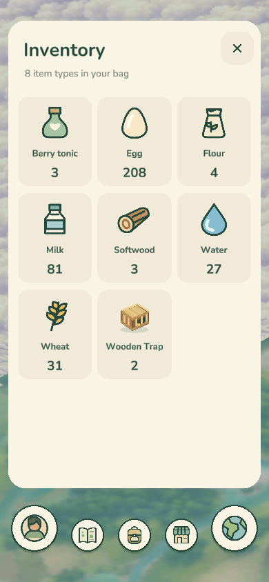
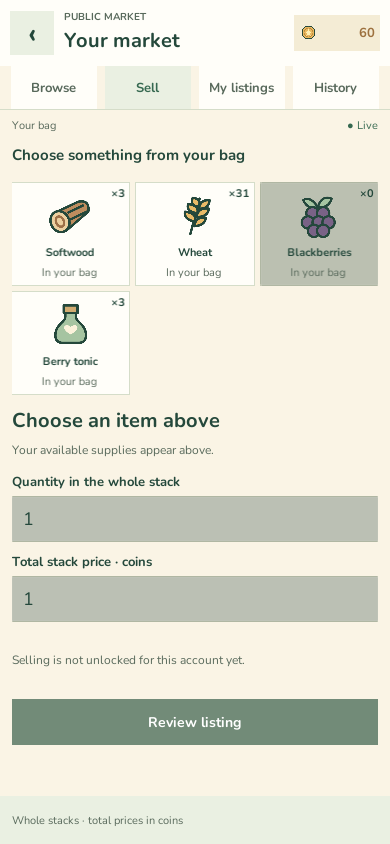
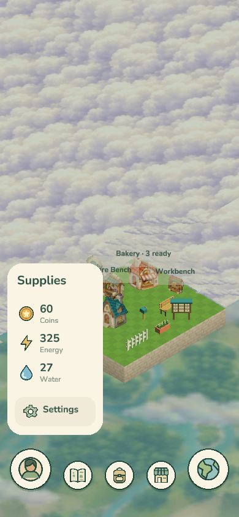
Glossy, chunky and sunny, in the family of popular casual mobile games. The real creatures already look like toys; this gives them a toy shelf.
Open the board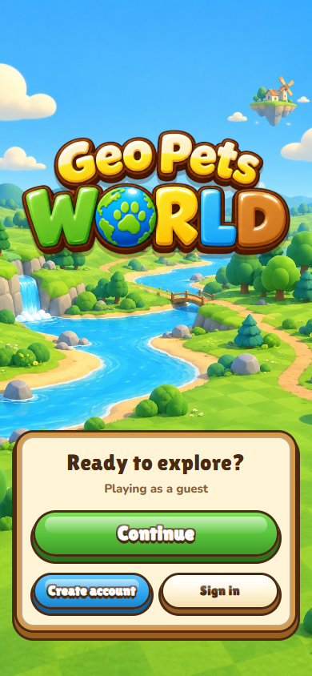
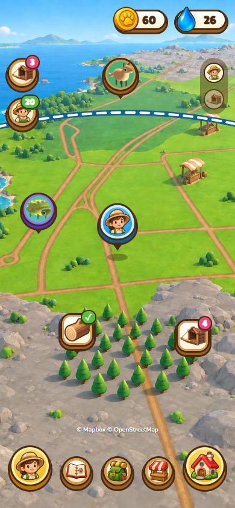
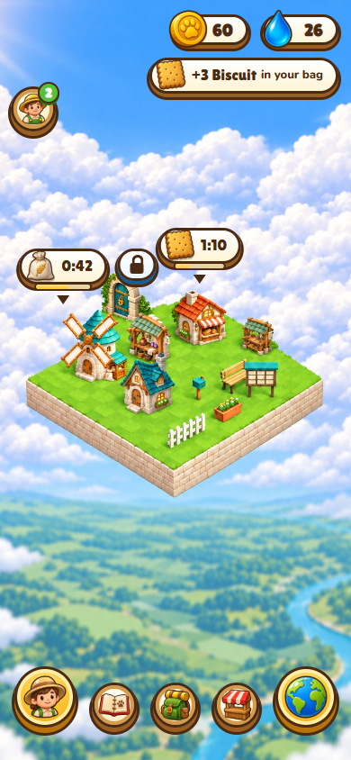
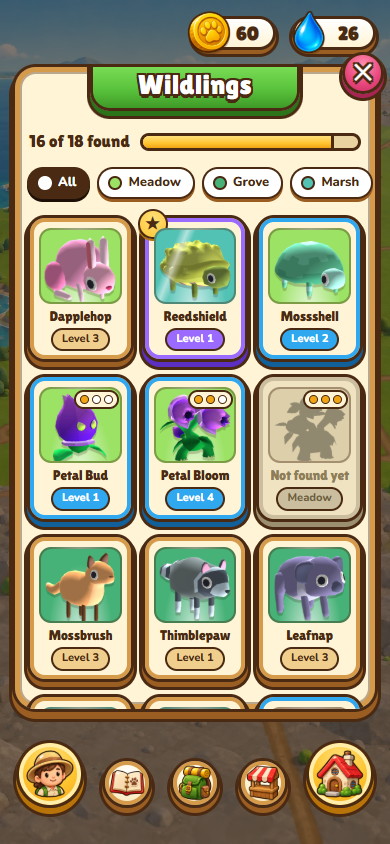
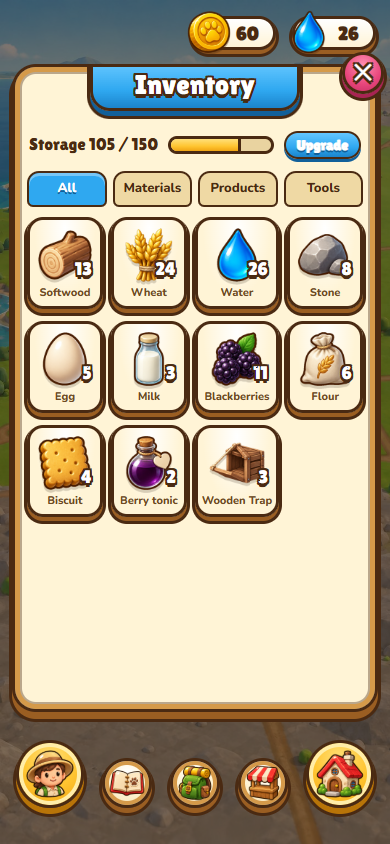
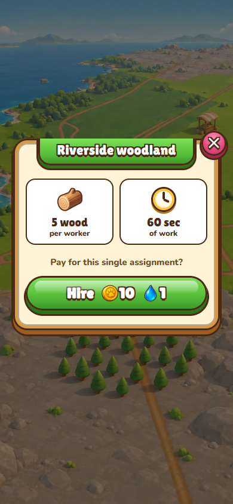
A painted picture book about a walk outside: matte gouache, tinted papers, a blue ink line that wobbles. The game's real creatures, repainted.
Open the board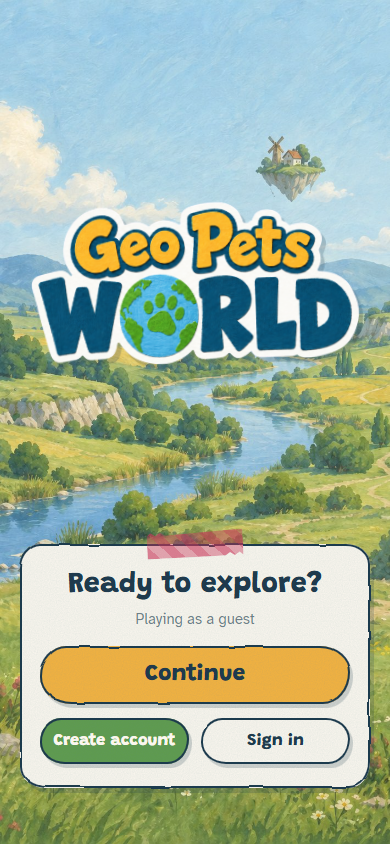
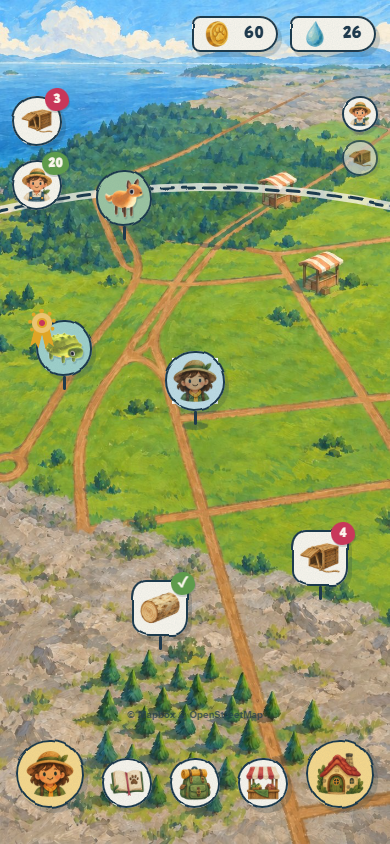
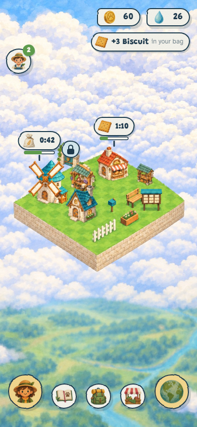
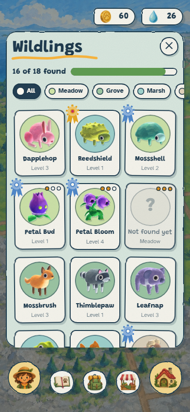
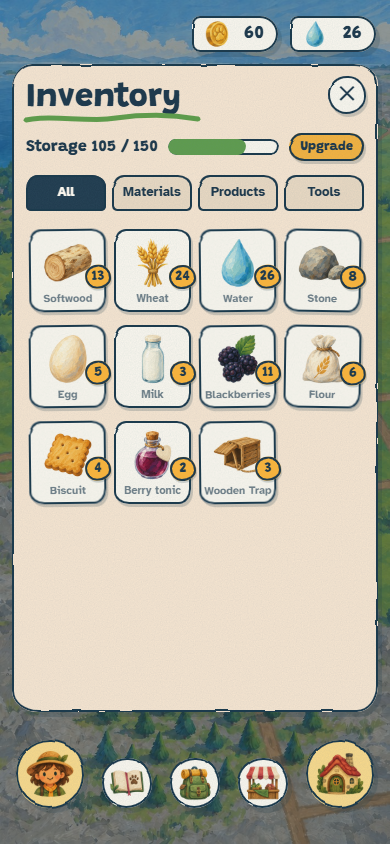
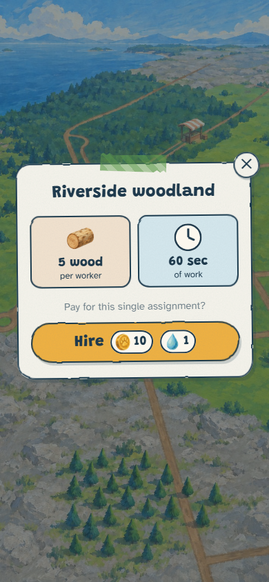
Canvas, stitching, brass and enamel pins, drawn flat like a national-park poster. Wildlings are pins on a board; rarity is the metal they are mounted in.
Open the board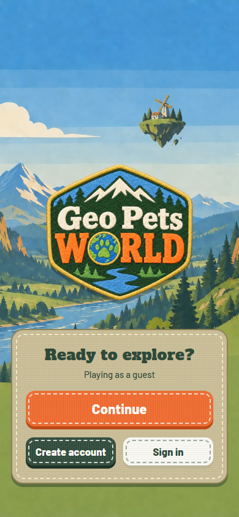
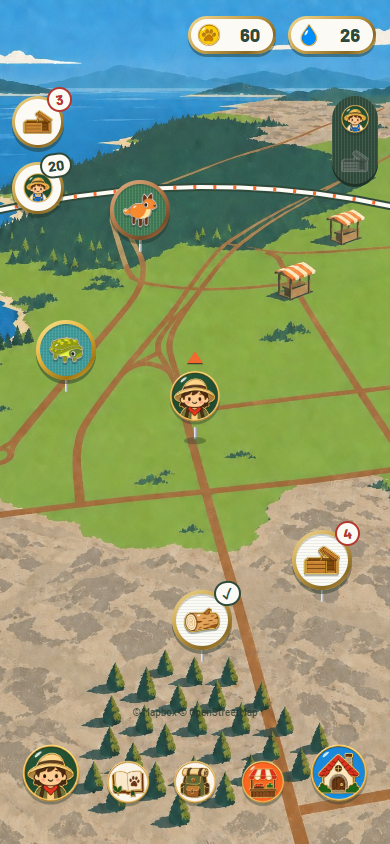
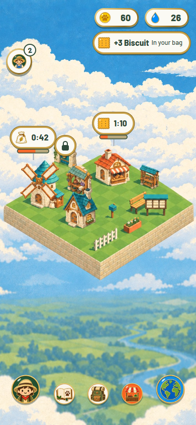
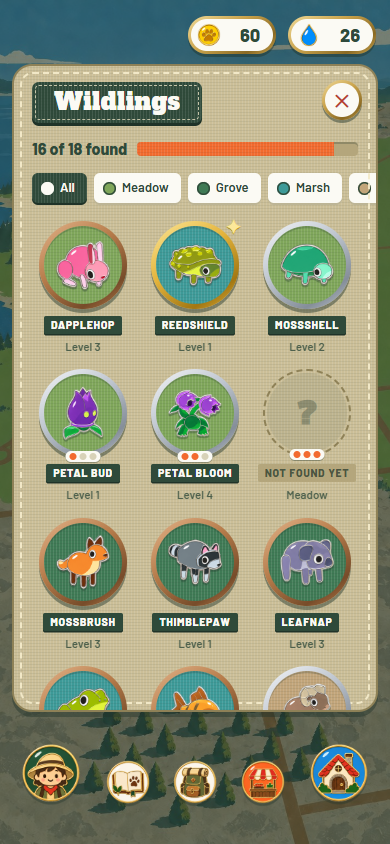
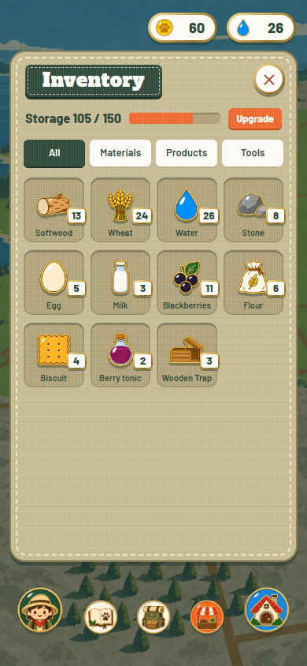
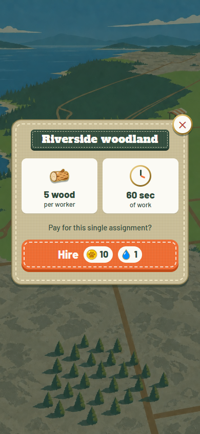
The baseline. The cream and green in use today, with depth, colour that means something, a heavier WORLD and a night mode. Nothing on it was generated.
Open the board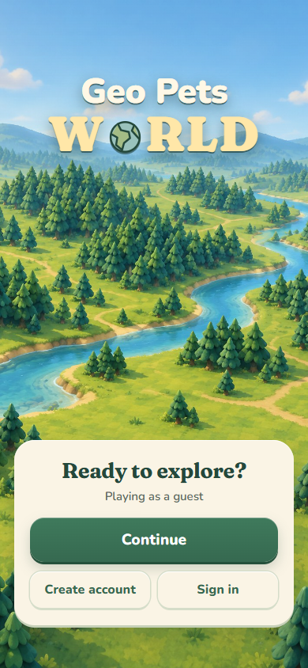
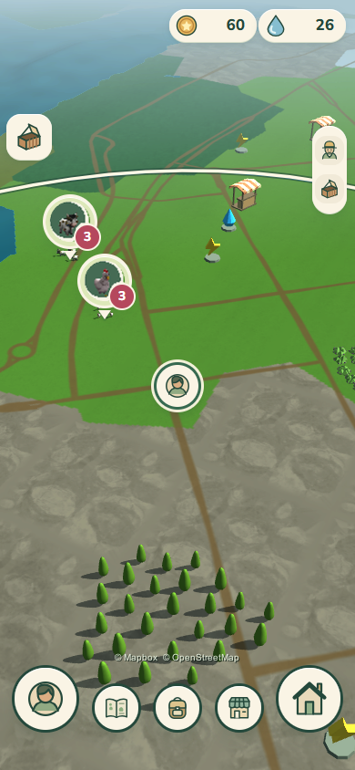
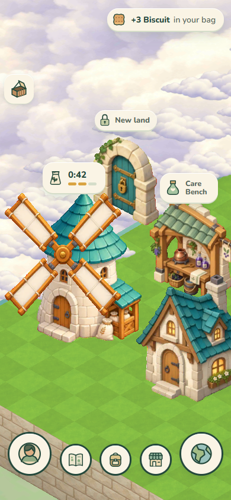
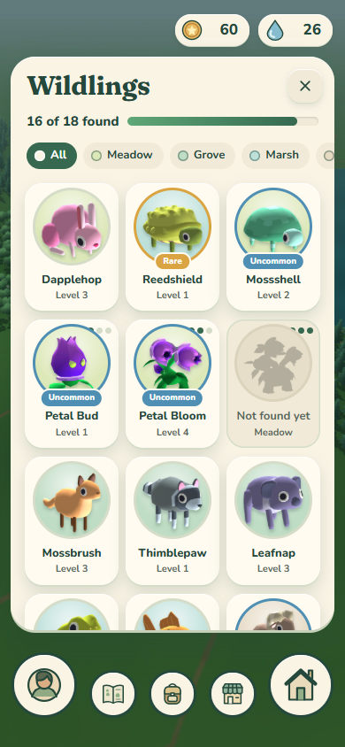
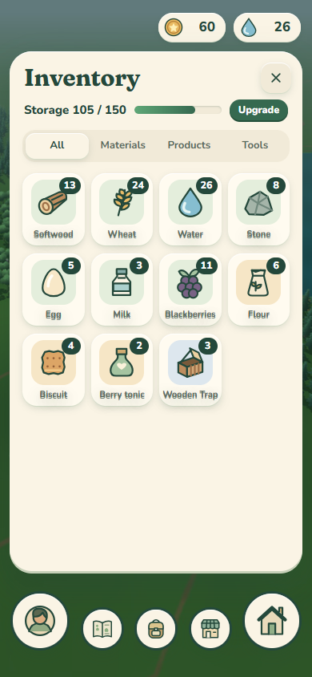
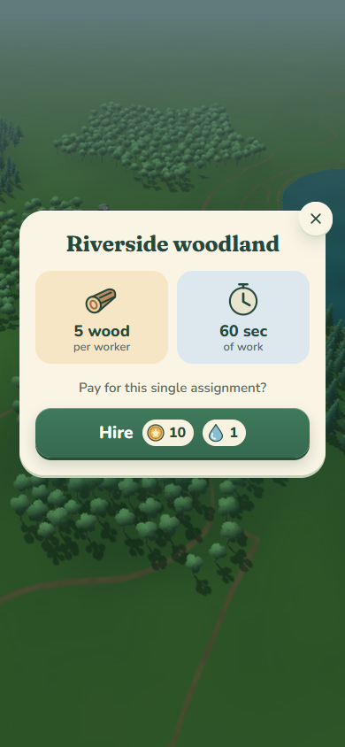
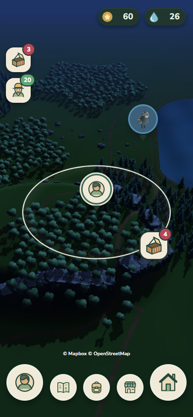